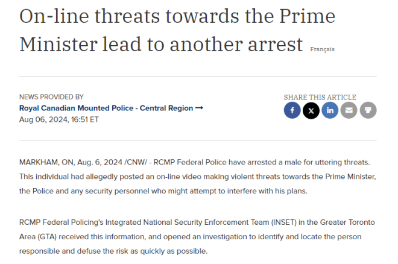

近日，安省大多伦多地区一名男子被皇家骑警逮捕，原因是他涉嫌在网上发布的一段视频中威胁总理杜鲁多。
图源：X
据CP24报道，皇家骑警在周二的新闻发布会上表示，该男子涉嫌对杜鲁多、警察以及任何“可能试图干扰他的计划”的安保人员发出“暴力威胁”。
加拿大皇家骑警大多伦多地区综合国家安全执法小组注意到了这些威胁，并展开调查，最终确定了嫌疑人的身份并将其拘留。

图源：newswire
皇家骑警确认，嫌疑人为33岁的Dawid Zalewski，无固定住址。他被指控两项威胁罪。
皇家骑警还表示，他们会严肃对待所有针对公众的威胁。
“我们注意到政府官员的安全环境，以及这给所有加拿大人带来的危险。我们的首要任务一直是、也将永远是加拿大人的安全，” 加拿大皇家骑警表示。
皇家骑警在新闻稿中还特别感谢约克区警方帮助迅速找到并逮捕了嫌疑人。
此前，另有三人也因在社交媒体上威胁总理而被捕。
图源：unsplash@wasdrew
新闻稿中还写道，加拿大皇家骑警严肃对待所有威胁公众的行为。“威胁我们国家安全的因素多种多样，加拿大也不能幸免。我们意识到政府官员面临的安全环境日益严峻，这对所有加拿大人来说都是一种危险。我们的首要任务一直是、也将永远是加拿大人的安全。”
如果您担心有人正在考虑、计划或准备实施暴力行为或帮助他人实施恐怖主义行为，请联系您当地的警局。举报任何可疑行为是义不容辞的责任。如果您或他人的安全受到直接威胁，请拨打911。
非紧急提示可通过电话1-800-420-5805或登录网站www.rcmp.ca/report-it向加拿大皇家骑警国家安全信息网络报告。